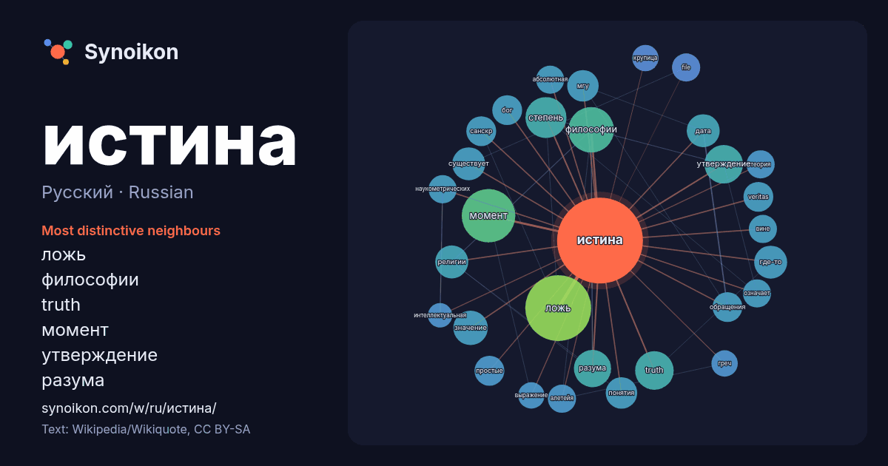

Русский · Russian · popular word
истина
“truth” · The words found around it in 857 instances from Russian Wikipedia, Wikiquote.

Most distinctive neighbours
- ложь 44×
- философии 17×
- truth 16×
- момент 16×
- утверждение 15×
- разума 15×
- степень 13×
- где-то 12×
- религии 11×
- дата 10×
- понятия 10×
- санскр 10.0×
- veritas 10.0×
- простые 9.4×
- мгу 9.3×
- обращения 9.1×
- наукометрических 9.0×
- file 9.0×
- алетейя 9.0×
- бог 8.9×
× = how many times more often than in general Russian Wikipedia text.
Most frequent neighbours
- ложь 44
- момент 29
- философии 21
- степень 17
- truth 15
- утверждение 15
- является 15
- разума 14
- жизни 13
- значение 12
- человека 12
- где-то 11
- дата 11
- религии 11
- существует 11
- мгу 10
- понятия 10
- veritas 9
- бог 9
- история 9
In context
- Истина в качестве ценности европейской культуры сохраняла устойчивое содержание в сферах обыденного сознания, религии, науки. История понятия «истина» Wikipedia snippets · Истина
- был уже известен: «Я есмь путь и истина и жизнь» (Ин. 14:6). П. А. Флоренский так комментировал это место Библии: Истина для еврея, действительно, есть Wikipedia snippets · Что есть истина?
- наукометрического проекта «ИСТИНА» (Интеллектуальная Система Тематического Исследования Наукометрических данных). В систему ИСТИНА заносятся основные биографические Wikipedia snippets · Московский государственный университет
- в Викисловаре Цитаты в Викицитатнике Истина — значения, названия и аббревиатура: Истина (ж.) — противоположность лжи. Истина — (устар., встарь) — означала также Wikipedia snippets · Истина (значения)
- благородные истины на трех уровнях: С точки зрения их сущности: «1) Вот арийская истина страдания; 2) Вот арийская истина источника; 3) Вот арийская истина пресечения; Wikipedia snippets · Четыре благородные истины
- открытия может принести истина… Мишель Мерсье — Натали Невиль Робер Оссейн — Пьер Монто Жером Раймон — судья Бернар Мюссон «Вторая истина» (англ.) на сайте Wikipedia snippets · Вторая истина
- «Истина, выбирающаяся из колодца» (фр. La Vérité sortant du puits); также «Истина, выбирающаяся из колодца, вооружённая плетью для наказания человечества» Wikipedia snippets · Истина, выбирающаяся из колодца
- «Невероятная истина» (англ. The Unbelievable Truth) — американский кинофильм 1989 года. Действие происходит в маленьком американском городке. Красавица Wikipedia snippets · Невероятная истина
More Russian words
- бог
- власть
- вода
- деньги
- жизнь
- здоровье
- золото
- искусство
- история
- климат
- кошка
- мост
- наука
- пища
- поезд
- природа
- работа
- семья
- сердце
- смерть
- собака
- язык
Precomputed on 2026-10-09 with default settings (±5 words, medium corpus). The interactive map can refresh it with live data.